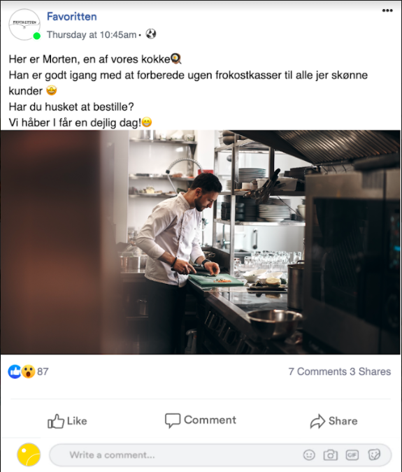

SoMe post

Det sociale-medie-post blev lavet i 1. semester.
Det er fra SoMe og branding-projektet, som var et projekt, hvor der skulle arbejdes
videre med det fra iværksætterkonkurrencen.
Dette er til en falsk facebook-profil, for at kunne reklamere
for vores firma ‘favoritten'. Dette fiktive opslag skulle være med til at vise kunderne, hvad
der sker bag kulissen.
I projektet var min rolle at finde på kreative opslag og indrage kunden på de
sociale medier.